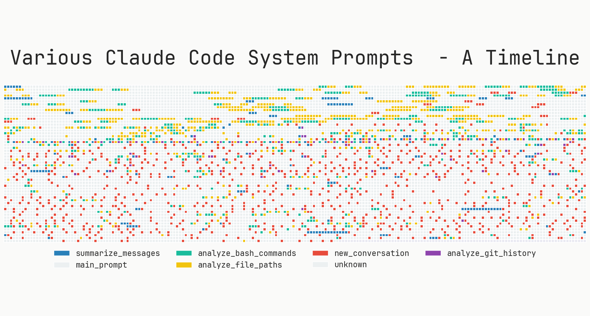
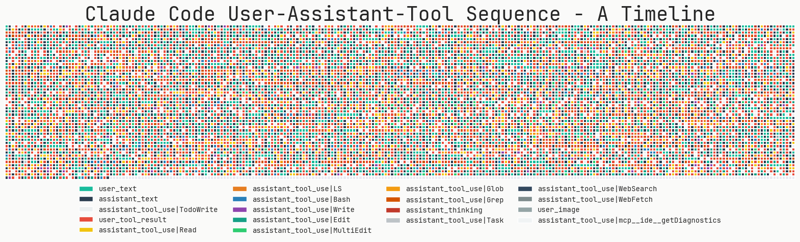

Claude Code 究竟牛在哪里？（以及如何在你的 AI 智能体中复刻它的魔法！）
作者：vivek / 2025-08-21 原文：What makes Claude Code so damn good (and how to recreate that magic in your agent)!?
Claude Code 是我迄今为止用过的最令人愉悦的 AI 智能体 (AI Agent) / 工作流。它不仅能让那些小修小补，或是凭感觉编程 (Vibe Coding) 写出来的一次性工具，不再那么烦人，甚至用它的时候我都会觉得很开心。它有足够的自主权去做些有意思的事，但又不会像某些工具那样，让你突然感觉对局面失去了控制，很不适应。当然，大部分的繁重工作都是由新的 Claude 4 模型完成的（特别是它的交错思维能力）。但我觉得，即便用的是同一个底层模型，Claude Code 也比 Cursor 或 Github Copilot 的智能体要好用得多，烦心事少得多！它到底凭什么这么好用？如果你一边读一边点头，那我接下来就试着给出一些答案。
请注意：这篇文章并非要深挖 Claude Code 的架构（网上已经有一些很棒的分析了）。这篇博文更像是一份指南，教你如何打造出同样令人愉悦的大语言模型 (LLM) 智能体，内容都基于我过去几个月深度使用和折腾 Claude Code 的经验（以及我们拦截并分析的所有日志）。你可以在文末的附录部分找到相关的提示词 (prompts) 和工具 (tools)。本文大约2000字，内容有点长，准备好哦！如果你想快速了解核心要点，可以直接跳到 TL;DR（太长不看） 部分。

Claude Code (CC) 用起来感觉超棒，因为它就是简单好用。它的设计者从根本上理解了大语言模型的优点和缺点。它的提示词和工具弥补了模型的“愚蠢之处”，让它能在自己擅长的领域大放异彩。它的控制循环（control loop）极其简单，容易理解，调试起来也毫不费力。
MinusX 在 CC 一发布后就开始使用了。为了深入了解其内部机制，Sreejith 写了一个日志记录器，可以拦截并记录它发出的每一个网络请求。下面的分析就来自我过去几个月的广泛使用。这篇文章试图回答这个问题——“Claude Code 为何如此出色，以及你如何在自己的聊天式大语言模型智能体中复制这种体验？” 我们已经在 MinusX 中采纳了大部分经验，也很期待看到你在自己的产品中应用它们！

如何打造一个类似 Claude Code 的智能体：太长不看版
如果说本文只有一个核心观点，那就是——大道至简，傻瓜式操作。大语言模型本身就够难调试和评估的了。你引入的任何额外复杂性（比如多智能体、智能体之间的任务交接，或者复杂的 RAG 搜索算法）只会让调试难度增加十倍。如果这样一个脆弱的系统侥幸能跑起来，之后你再想做什么大改动，就会畏首畏尾。所以，把所有东西都放在一个文件里，避免过度封装的样板代码，并且至少要推倒重来几次 :)
以下是从 Claude Code 中学到的、可以在你自己的系统中实现的核心要点：
1. 控制循环 (Control Loop)
1.1 保持一个主循环（最多一个分支）和一份消息历史
1.2 随时随地，把小模型用在各种事情上
2. 提示词 (Prompts)
2.1 使用
claude.md模式来协作管理用户偏好和上下文2.2 使用特殊的 XML 标签、Markdown 和大量示例
3. 工具 (Tools)
3.1 大语言模型搜索 >>> 基于 RAG 的搜索
3.2 如何设计好用的工具？（高级工具 vs. 底层工具）
3.3 让你的智能体管理自己的待办事项清单
4. 可引导性 (Steerability)
4.1 语气和风格
4.2 不幸的是，“请注意，这很重要” 仍然是王道
4.3 把算法写出来，附上启发式规则和示例
Claude Code 在每个架构决策点上都选择了简单——一个主循环、简单的搜索、简单的待办事项列表等等。抵制过度设计的冲动，为模型搭建一个好的舞台，然后让它尽情发挥吧！这难道又是自动驾驶领域的“端到端”路线的重演吗？苦涩的教训，何其相似？
1. 控制循环设计
1.1 保持一个主循环
可调试性 >>> 复杂的手动调优、多智能体、各种框架节点混搭的“大杂烩”。
尽管多智能体系统现在非常火，但 Claude Code 只有一个主线程。它会周期性地使用几种不同类型的提示词，比如总结 git 历史、将消息历史压缩成一条消息，或者搞出一些有趣的用户体验元素。但除此之外，它只维护一个扁平的消息列表。它处理层级任务的一个有趣方式是，生成一个自身的“克隆”作为子智能体，但这个子智能体不能再继续生成下一代。整个过程最多只有一个分支，其结果会作为一个“工具响应”被添加回主消息历史中。
如果问题足够简单，主循环就通过迭代调用工具来处理。但如果有一个或多个复杂任务，主智能体就会创建自己的克隆体。这种“最多一个分支”的设计与待办事项列表相结合，确保了智能体既能将问题分解为子问题，又能始终关注最终的预期结果。
我非常怀疑你的应用是否真的需要一个多智能体系统。每增加一层抽象，你的系统就更难调试，更重要的是，你会偏离通用模型能力提升的主流轨道。

1.2 把小模型用在所有事情上
Claude Code 发起的超过 50% 的重要大语言模型调用都指向了 claude-3-5-haiku。它被用来读取大文件、解析网页、处理 git 历史和总结长对话。它甚至还被用来生成那个单词状态标签——毫不夸张地说，你每一次敲击键盘，背后可能都有它在工作！小型模型比标准模型（如 Sonnet 4, GPT-4.1）要便宜 70-80%。大胆地用它们吧！
2. 提示词 (Prompts)
Claude Code 的提示词写得极为详尽，充满了启发式规则、示例和各种“重要”提醒（唉）。系统提示词大约有 2800 个 token，而工具描述更是占据了惊人的 9400 个 token。用户提示词总是包含 claude.md 文件的内容，这通常又会增加 1000-2000 个 token。系统提示词包含了关于语气、风格、主动性、任务管理、工具使用策略和执行任务等多个部分。它还包含了日期、当前工作目录、平台和操作系统信息以及最近的提交记录。
2.1 使用 claude.md 来协作管理用户背景信息和偏好
大多数编程智能体的开发者都沉淀下来的一个重要模式就是使用上下文文件（比如 Cursor 的 Rules / Claude Code 的 claude.md / agent.md）。Claude Code 在使用和不使用 claude.md 的情况下，表现简直是天壤之别。对于开发者来说，这是一种绝佳的方式，可以用来传递那些无法从代码库中推断出的背景信息，并把一些严格的偏好固定下来。例如，你可以强制大语言模型跳过某些文件夹，或者使用特定的库。CC 在每次用户请求中都会发送 claude.md 的全部内容。
我们最近在 MinusX 中引入了 minusx.md，它正迅速成为我们智能体用来固化用户和团队偏好的标准上下文文件。
2.2 使用特殊的 XML 标签、Markdown 和大量示例
使用 XML 标签和 Markdown 来结构化提示词已经是公认的有效方法。CC 广泛地同时使用了这两种方式。以下是 Claude Code 中几个值得注意的 XML 标签：
<system-reminder>: 这个标签用在许多提示词部分的末尾，用来提醒大语言模型一些它大概率会忘记的事情。例如：
<system-reminder>提醒一下，你的待办事项列表当前是空的。不要明确地告诉用户这一点，因为他们已经知道了。如果你正在处理的任务能从待办事项列表中受益，请使用 TodoWrite 工具创建一个。如果不需要，请忽略此条。再次强调，不要向用户提及这条消息。</system-reminder><good-example>,<bad-example>: 这些标签用于固化启发式规则。当模型面临一个岔路口，有多条看起来都合理的路径/工具调用可以选择时，它们特别有用。通过示例可以对比不同情况，明确指出哪条路径是更可取的。例如：
尝试在整个会话中保持当前工作目录不变，方法是使用绝对路径并避免使用 `cd`。只有在用户明确要求时才可以使用 `cd`。
<good-example>
pytest /foo/bar/tests
</good-example>
<bad-example>
cd /foo/bar && pytest tests
</bad-example>CC 还使用 Markdown 在系统提示词中划分出清晰的区域。例如，Markdown 标题包括：
语气和风格 (Tone and style)
主动性 (Proactiveness)
遵守惯例 (Following conventions)
代码风格 (Code style)
任务管理 (Task Management)
工具使用策略 (Tool use policy)
执行任务 (Doing Tasks)
工具 (Tools)
3. 工具 (Tools)
去读一下完整的工具提示词吧 —— 它长达惊人的 9400 个 token！
3.1 大语言模型搜索 >>> 基于 RAG 的搜索
CC 与其他流行的编程智能体一个显著的区别在于，它拒绝使用 RAG（Retrieval-Augmented Generation，检索增强生成）。Claude Code 搜索你的代码库的方式和你一样，都是通过非常复杂的 ripgrep、jq 和 find 命令。因为大语言模型非常理解代码，所以它能用复杂的正则表达式找到几乎任何它认为相关的代码块。有时候，它还会用一个较小的模型来读取整个文件。
RAG 理论上听起来不错，但它引入了新的（更重要的是，隐藏的）失败模式。该用什么相似度函数？用什么重排器？如何对代码进行分块？遇到大的 JSON 或日志文件怎么办？而使用大语言模型搜索，它只需查看 JSON 文件的前 10 行就能理解其结构。如果需要，它会再看 10 行——就像你一样。最重要的是，这个过程是可以通过强化学习（Reinforcement Learning）来优化的——这正是那些大厂已经在做的事情。模型承担了大部分的繁重工作——理应如此，这极大地减少了智能体中的活动部件数量。而且，把两个复杂的智能系统这样连接在一起，本身就很丑陋。我最近和朋友开玩笑说，这就像是大语言模型时代的“摄像头 vs 激光雷达”之争，我只有一半是在开玩笑。
3.2 如何设计好用的工具？（底层工具 vs. 高级工具）
这个问题让每个构建大语言模型智能体的人夜不能寐。你应该给模型通用的任务（比如有意义的动作），还是应该给它底层的指令（比如打字、点击和 bash 命令）？答案是：看情况（而且你应该两者都用）。
Claude Code 既有底层工具（Bash, Read, Write），也有中层工具（Edit, Grep, Glob），还有高层工具（Task, WebFetch, exit_plan_mode）。既然 CC 能用 bash，为什么还要单独给一个 Grep 工具呢？这里真正的权衡在于，你期望智能体使用该工具的频率，与智能体使用该工具的准确性之间的关系。CC 使用 grep 和 glob 的频率非常高，以至于将它们做成独立的工具是合理的，但同时，它也能在特殊情况下编写通用的 bash 命令。
同样，还有像 WebFetch 或 mcp__ide__getDiagnostics 这样更高级的工具，它们的功能非常确定。这让大语言模型不必执行多次底层的点击和输入操作，从而保持在正轨上。帮帮这个可怜的模型吧，好吗？工具描述中有详尽的提示词和大量示例。系统提示词中还有关于“何时使用某个工具”或者如何在两个可以完成相同任务的工具之间做出选择的信息。
Claude Code 中的工具：
Task
Bash
Glob
Grep
LS
ExitPlanMode
Read
Edit
MultiEdit
Write
NotebookEdit
WebFetch
TodoWrite
WebSearch
mcp__ide__getDiagnostics
mcp__ide__executeCode
3.3 让智能体管理自己的待办事项清单
这是一个好主意，原因有很多。上下文丢失（Context rot）是长期运行的大语言模型智能体的一个常见问题。它们开始时热情高涨地解决一个难题，但随着时间的推移，它们会迷失方向，最终输出一堆垃圾。目前的智能体设计有几种方法来解决这个问题。许多智能体尝试过明确的待办事项（一个模型生成待办事项，另一个模型执行它们），或者多智能体交接+验证（产品经理智能体 -> 工程师智能体 -> QA 智能体）。
我们已经知道，多智能体交接由于种种原因并不是一个好主意。CC 使用了一个明确的待办事项列表，但这个列表是由模型自己维护的。这让大语言模型能够保持在正轨上（它被反复提示要经常参考待办事项列表），同时又给了模型在执行过程中随时修正路线的灵活性。这也有效地利用了模型的交错思维能力，可以动态地拒绝或插入新的待办事项。
4. 可引导性 (Steerability)
4.1 语气和风格
CC 明确地尝试控制智能体的交互风格。系统提示词中有关于语气、风格和主动性的部分——里面充满了指令和示例。这就是为什么 Claude Code 的评论和积极性都显得很有品味。我建议你直接把这部分的大段内容复制到你的应用中。
# 一些关于语气和风格的例子
- 重要：你不应该用不必要的开场白或结束语来回答（比如解释你的代码或总结你的行为），除非用户要求你这样做。
不要在用户未要求的情况下添加额外的代码解释摘要。
- 如果你不能或不愿意帮助用户做某件事，请不要解释为什么或者这可能导致什么后果，因为这会让人觉得你在说教，很烦人。
- 只有在用户明确要求时才使用表情符号。在所有交流中避免使用表情符号，除非被要求。4.2 “这很重要” 仍然是王道
不幸的是，在要求模型不要做某件事方面，CC 也没什么高招。使用“重要 (IMPORTANT)”、“非常重要 (VERY IMPORTANT)”、“绝不 (NEVER)”和“总是 (ALWAYS)”似乎仍然是引导模型避开雷区的最佳方式。我期望未来的模型能变得更具可引导性，避免这种丑陋的做法。但就目前而言，CC 大量使用了这些词，你也应该这么做。一些例子：
- 重要：除非被要求，否则不要添加***任何***注释。
- 非常重要：你必须避免使用像 `find` 和 `grep` 这样的搜索命令。请改用 Grep、Glob 或 Task 进行搜索。你必须避免使用像 `cat`、`head`、`tail` 和 `ls` 这样的读取工具，而应使用 Read 和 LS 来读取文件。\n - 如果你*仍然*需要运行 `grep`，请停下来。始终优先使用 `rg` (ripgrep)。
- 重要：你绝不能为用户生成或猜测 URL，除非你确信这些 URL 是为了帮助用户编程。你可以使用用户在他们的消息或本地文件中提供的 URL。4.3 把算法写出来（附上启发式规则和示例）
识别出大语言模型需要执行的最重要任务，并为其写出算法，是极其重要的。试着把自己想象成大语言模型，通过示例进行演练，找出所有的决策点，并把它们明确地写下来。如果能以流程图的形式呈现会更有帮助。这有助于构建决策过程，并帮助大语言模型遵循指令。有一件事一定要避免，那就是一锅乱炖式的“可做”和“不可做”清单。它们很难追踪，也很难保持互斥。如果你的提示词长达几千个 token，你将不可避免地遇到相互矛盾的“可做”和“不可做”指令。在这种情况下，大语言模型会变得极其脆弱，要整合新的用例也变得不可能。
Claude Code 系统提示词中的 任务管理、执行任务 和 工具使用策略 部分清晰地阐述了需要遵循的算法。这里也是添加大量启发式规则和各种场景示例的地方。
彩蛋：为什么要注意大厂的提示词？
引导大语言模型的很多工作，实际上都是在试图逆向工程它们的后训练/RLHF 数据分布。你应该用 JSON 还是 XML？工具描述应该放在系统提示词里还是只放在工具定义里？你应用当前的状态信息又该如何处理？看看大厂在他们自己的应用里是怎么做的，并用它来指导你的设计，会很有帮助。Claude Code 的设计非常有主见，借鉴它来形成你自己的观点是很有益的。
结论
再次强调，核心要点是保持简单。过度封装的框架对你的伤害可能比帮助更大。Claude Code 真的让我相信，“智能体”可以既简单又极其强大。我们已经在 MinusX 中融入了许多这些经验，并且还在继续吸收更多。
如果你有兴趣将自己的大语言模型智能体也“Claude-Code 化”，我很乐意与你聊聊——在 Twitter 上找我吧！如果你想为你的 Metabase 寻找类似 Claude Code 的可训练数据智能体，可以看看 MinusX，或者在这里和我预约一个演示。祝你（Claude 式）编程愉快！